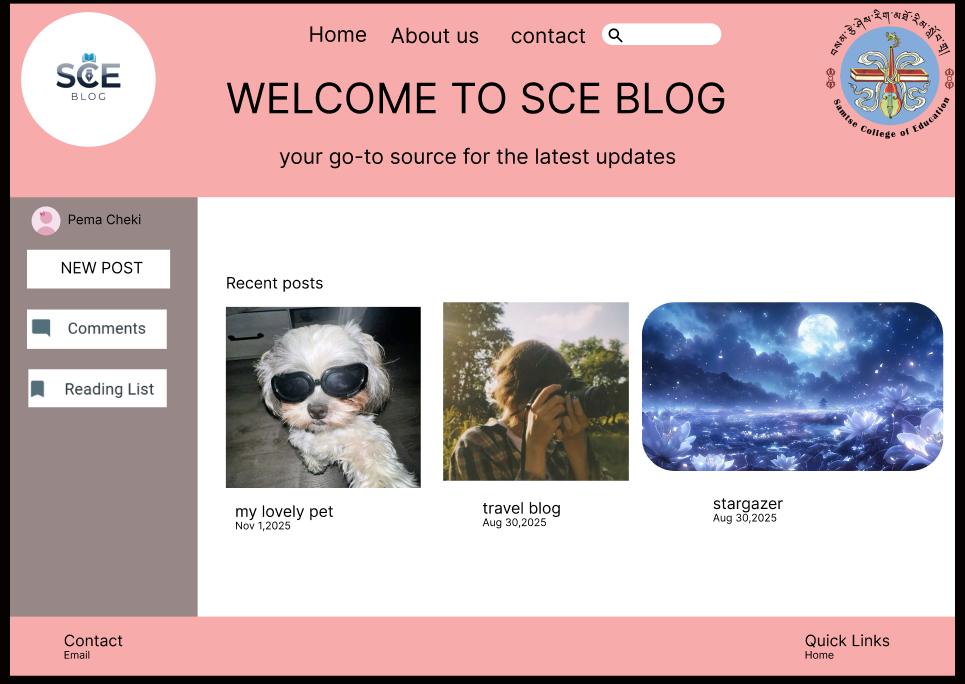
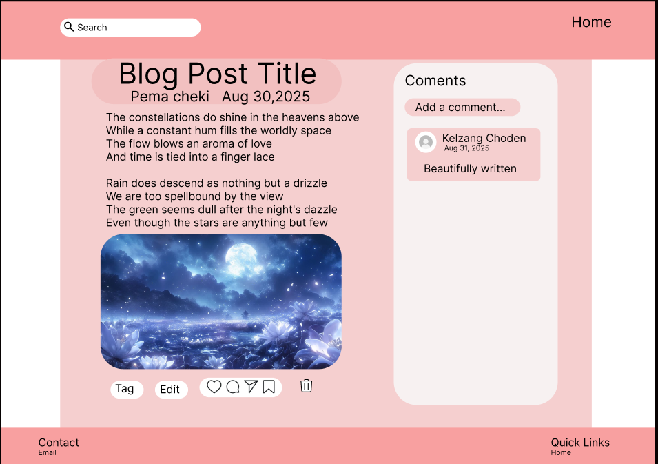

This is an ongoing web development project aimed at creating a private blog platform exclusively for Samtse College students. The platform allows students to write, share, and read blogs, fostering collaboration, digital expression, and a sense of community within the college.
The project involves designing a user-friendly interface, implementing secure user authentication so only enrolled students can access and contribute, and organizing content effectively to make it easy to navigate. We are currently working on integrating features such as commenting, editing, and categorizing posts.
This project is helping us gain practical experience in **web development technologies**, including HTML, CSS, JavaScript, and backend frameworks, while applying best practices in UI/UX design, security, and database management. As the project progresses, we aim to create a robust, interactive, and secure platform that encourages students to share knowledge and ideas digitally.
 